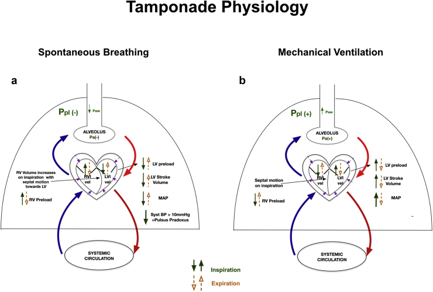
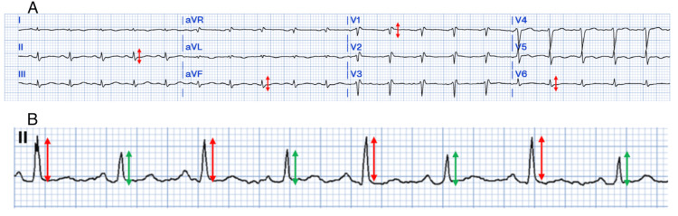
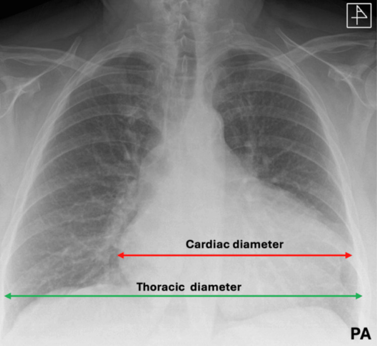
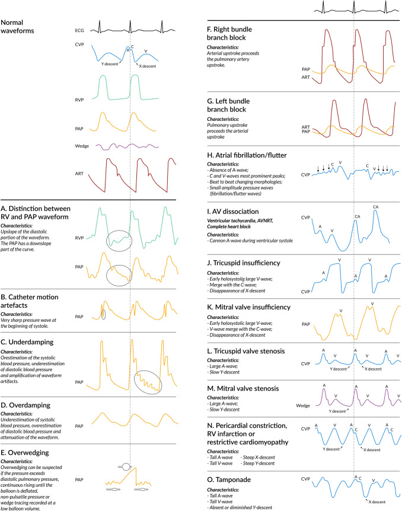

定義與定位
這個病是什麼？在分類樹的哪個位置？跟隔壁的病靠什麼分開？
| 項目 | 重點 |
|---|---|
| 本質 | 心包腔液體 → 心包內壓上升 → 舒張填充受限 → 阻塞型休克（問題不在收縮力） |
| 關鍵變數 | 速度 ＞ 體積。急性出血約 100–200 mL 就足以致命；慢性積液可累積到 1–2 L 才發作 |
| 分類位置 | 「舒張填充障礙」家族：本篇、Constrictive pericarditis、Restrictive cardiomyopathy。三者中只有填塞是急症 |
| 病灶在哪 | 心包腔裡的液體（對照：CP 在心包硬殼、RCM 在心肌） |
病因與機制
為什麼會發生？病生理鏈條長什麼樣？
病因
| 累積速度 | 代表病因 |
|---|---|
| 快（小量就致命） | 穿刺傷／鈍傷、醫源性穿孔（心導管、電燒、節律器植入、心包穿刺本身）、心肌梗塞後心室游離壁破裂、A 型主動脈剝離破入心包 |
| 慢（可累積大量） | 惡性腫瘤（肺癌、乳癌、淋巴瘤、白血病、黑色素瘤）、結核（見 Tuberculosis↗）、尿毒症、特發性／病毒性 Pericarditis↗、自體免疫（SLE、RA）、縱膈放射治療、甲狀腺低下 |
| 加成因子 | 抗凝血劑——本身不是原因，但會把一點滲液變成血心包 |

自發呼吸（左）：吸氣使靜脈回流與 RV preload 增加；受固定心包容積限制，中膈向左、LV preload／stroke volume／MAP 下降，收縮壓呼吸變異 ＞10 mmHg 即 pulsus paradoxus。正壓通氣（右）的壓力傳遞與回流方向不同，徵象可能被削弱或反轉。Source: Madhivathanan et al., BJA Education 2021, Figure 3。臨床表現
典型病人長什麼樣？哪些症狀是幾乎一定有、哪些是提示性的？
- 典型：呼吸困難（最敏感的症狀）、頻脈、呼吸急促、頸靜脈怒張、心音遙遠、低血壓
- 提示性：奇脈、脈搏壓變窄、四肢冰冷與末梢灌流差、Ewart sign（左肩胛下角叩診濁音＋支氣管呼吸音，大量積液壓迫左下肺）
- 反直覺（會讓你錯過診斷）：低血壓常是晚期表現（早期可因交感代償而血壓正常甚至偏高）；低壓性填塞（low-pressure tamponade）——合併容積不足（透析後、出血、腹瀉）時 JVP 可以不高、IVC 可以不脹、奇脈可以沒有，Beck's triad 整組失效；頻脈可能缺席——β-blocker、傳導系統疾病、甲狀腺低下性心包積液
→ 相關主訴流程：Dyspnea、Chest pain↗、Shock
頸靜脈波形：x 保留、y 消失
| 波 | 填塞時 | 為什麼 |
|---|---|---|
| x descent | 保留、甚至明顯 | 心室收縮把心臟整體體積縮小，心包內壓短暫下降，血才進得了心房 |
| y descent | 變鈍或消失 | 心包已被撐滿，三尖瓣打開後心室根本吃不下血 → 心房壓不下降 |
對照 Constrictive pericarditis：x 與 y 都明顯（y 特別深，Friedreich sign），波形呈 W／M 形。「y descent 明顯」與「y descent 消失」是這一群最高頻的對調改題點。
奇脈 pulsus paradoxus
- 定義：吸氣時收縮壓下降 ＞10 mmHg。名字誤導——它不是「反常」，只是把正常人本來就有的（＜10 mmHg）生理性下降放大。
- 量法：袖帶充氣到收縮壓以上後極慢放氣；第一次聽到 Korotkoff 音（此時只有吐氣期聽得到）＝上界，繼續放氣到每一拍都聽得到＝下界，上界 − 下界 ＞10 mmHg ＝ 奇脈。病人必須自主、平靜呼吸（刻意深呼吸會做出假陽性）；動脈導管波形是最準的量法。
- 假陰性（有填塞卻量不到奇脈）——記三個：重度主動脈瓣逆流、大型心房中膈缺損（ASD）、正壓通氣中。
- 假陽性（沒有填塞卻有奇脈）：氣喘與 COPD 急性發作、大量 Pulmonary embolism、張力性氣胸、嚴重低血容、大潮氣量機械通氣。
Kussmaul sign：填塞沒有、束縮有
- 定義：吸氣時 JVP 不降反升（正常吸氣時胸腔內壓下降、靜脈回流增加，JVP 應該下降）
- 單純心包填塞：沒有——心包腔內是液體，吸氣造成的胸腔內壓下降均勻傳到心包腔與右心，右心仍然吃得下增加的回流量 → JVP 照樣下降
- 束縮性心包炎：有——硬殼把心臟與胸腔內壓的變化隔開、總容積被固定，吸氣時多回來的血沒地方去 → JVP 反而上升
- 也見於：右心室梗塞、重度右心衰竭、三尖瓣狹窄、Restrictive cardiomyopathy
- 床邊用法：有 Kussmaul sign → 想束縮性心包炎、右心室梗塞；沒有 → 支持填塞
診斷
診斷標準是什麼？要開哪些檢查？哪個是 gold standard？
心電圖
| 發現 | 內容 |
|---|---|
| 竇性頻脈 | 最常見，但最不特異 |
| 低電壓 | 肢導 QRS 振幅 ＜5 mm、胸導 ＜10 mm |
| Electrical alternans（電交替） | 逐拍 QRS 振幅／電軸一高一低規律交替；機制是心臟在大量積液中像鐘擺一樣前後擺動（swinging heart），每兩拍才回到同一位置 |
- 電交替特異度高、敏感度低；P、QRS、T 全部都交替（total electrical alternans） 對大量積液／填塞最特異。兩者都要大量積液才做得出來 → 急性外傷性填塞的心電圖可能只有頻脈
- 陷阱：低電壓非常不特異——肥胖、肺氣腫、氣胸、大量胸水、黏液水腫、心臟類澱粉沉積都會低電壓

A：肢導 QRS 振幅 ＜5 mm、胸前導程 ＜10 mm，符合 low voltage；B：相鄰 QRS 振幅規律一高一低，是大量積液中擺動心臟造成的 electrical alternans。Source: El Haddad et al., Cureus 2025, Figure 3（CC BY 4.0）。胸部 X 光
- 積液要累積到相當量才看得出心影變大 → 急性填塞的 X 光可以完全正常；X 光敏感度與特異度都低，不是心包疾病的第一線工具
- 典型：水瓶狀／燒瓶狀心影（water-bottle／flask-shaped heart），心緣銳利、肺野乾淨——「心影很大但沒有肺水腫」是重要反差；側位偶見 Oreo cookie sign

緩慢累積的大量心包積液可形成平滑、對稱擴大的 water-bottle／flask-shaped cardiac silhouette；肺野相對乾淨有助於和心衰肺水腫區分。X 光只能提示積液，不能用來判定是否已有 tamponade physiology。Source: El Haddad et al., Cureus 2025, Figure 4（CC BY 4.0）。心臟超音波（首選檢查）
要開的檢查：Echocardiography（Test）——不但看得到積液，還看得到血行動力學證據。
| 類別 | 發現 | 意義 |
|---|---|---|
| ① 積液 | 舒張期厚度估大小：＜1 cm 小、1–2 cm 中、＞2 cm 大 | 大小不等於填塞 |
| ② 腔室塌陷 | 右心房收縮期塌陷（最早出現） | 敏感但不特異；塌陷持續超過心動週期的 1/3 時特異度極高 |
| 右心室舒張早期塌陷 | 填塞的招牌；特異度高、敏感度中等 | |
| 左心房塌陷 | 較晚出現，但特異度高 | |
| ③ 靜脈 | IVC plethora：下腔靜脈擴張且吸氣塌陷 ＜50% | 最敏感但最不特異 |
| ④ 都卜勒 | 呼吸相流速變異（超音波版的奇脈） | 吸氣：三尖瓣流速↑、二尖瓣流速↓；吐氣相反 |
| ⑤ 型態 | Swinging heart：心臟在積液中前後擺動 | electrical alternans 的超音波對應 |
 左圖紅箭頭：心包積液中 RV 在 early diastole 向內塌陷；右圖則同時見雙側心房塌陷。判讀時要用 ECG／瓣膜開關定位時相，因為「塌陷發生在何時」比單看腔室變形更重要。Source: Pérez-Casares et al., Front Pediatr 2017, Figure 8（CC BY 4.0）。
左圖紅箭頭：心包積液中 RV 在 early diastole 向內塌陷；右圖則同時見雙側心房塌陷。判讀時要用 ECG／瓣膜開關定位時相，因為「塌陷發生在何時」比單看腔室變形更重要。Source: Pérez-Casares et al., Front Pediatr 2017, Figure 8（CC BY 4.0）。
 IVC plethora：IVC 擴張，M-mode 顯示吸氣時直徑下降不足 50%。它很敏感但不特異，仍要與右心腔塌陷、呼吸性 Doppler 變異及臨床休克一起判讀。Source: Pérez-Casares et al., Front Pediatr 2017, Figure 11（CC BY 4.0）。
IVC plethora：IVC 擴張，M-mode 顯示吸氣時直徑下降不足 50%。它很敏感但不特異，仍要與右心腔塌陷、呼吸性 Doppler 變異及臨床休克一起判讀。Source: Pérez-Casares et al., Front Pediatr 2017, Figure 11（CC BY 4.0）。
心導管壓力波形
要開的檢查：Cardiac catheterization↗（Test）——不是診斷填塞的必要步驟，血行動力學不穩時絕不能為了做它而延誤引流。只要記一件事：四腔舒張壓等化——心包內壓 ≈ RA 平均壓 ≈ RV 舒張壓 ≈ PA 舒張壓 ≈ PCWP，彼此差距在 ~5 mmHg 內。

看右下 N／O 兩格：束縮（N）有陡峭 x、y descent，形成 W／M 外觀；填塞（O）由 x descent 主導，y descent 鈍化或消失。整張圖同時保留正常 CVP 與其他病理波形，適合反覆做 pattern recognition。Source: Boezem et al., J Clin Monit Comput 2022, Figure 2（CC BY 4.0）。鑑別診斷
要跟誰分清楚？靠什麼分？
| 要排除的 | 支持它的線索 | 怎麼排除 |
|---|---|---|
| Pulmonary embolism | 同樣是阻塞型休克，也有 JVD、頻脈、奇脈 | 超音波看右心室擴大而非塌陷、沒有心包積液；D-dimer／CTPA |
| Aortic dissection | 撕裂樣胸背痛、脈搏或血壓左右不對稱、縱膈變寬 | 它可以「就是」填塞的病因——這時處置完全不同（見〈禁忌與陷阱〉） |
| 張力性氣胸 | 患側呼吸音消失、氣管偏移、叩診鼓音 | 床邊超音波無肺滑動；立即減壓 |
| 右心室梗塞 | 下壁 ST 抬高 ＋ 右側導程 V4R 抬高；有 Kussmaul sign | EKG ischemia；超音波無心包積液、右心室大而不動 |
| 心因性休克（大面積 ACS） | EF 明顯下降、Troponin 大幅上升 | 超音波看收縮功能與有無積液 |
| Constrictive pericarditis | Kussmaul sign、y descent 明顯、心包鈣化、病程以月計 | 詳見下表與該篇 |
| 大量心包積液但無填塞 | 有液體、但無腔室塌陷、無 IVC plethora、血壓穩 | 不引流；追蹤並找病因 |
三者對照：只留分辨「是不是急症」用得到的部分
| 本篇 填塞 | Constrictive pericarditis | Restrictive cardiomyopathy | |
|---|---|---|---|
| 病灶 | 心包腔的液體 | 心包硬殼 | 心肌本身 |
| y descent | 變鈍／消失 | 極明顯（Friedreich） | 明顯 |
| 奇脈 | 有 | 少見 | 少見 |
| Kussmaul sign | 無 | 有 | 可有可無 |
| 急不急 | 急症，立刻引流 | 擇期心包切除 | 治底層病因 |
治療
第一線是什麼？什麼情況升級？
| 情境 | 處置 |
|---|---|
| 有症狀 ＋ 超音波證據 | 立即 Pericardiocentesis↗——超音波導引，劍突下或胸骨旁／心尖入路；不必等其他檢查 |
| 等待引流期間（撐住） | 輸液維持前負荷（見下方警告）；升壓劑（norepinephrine）當橋接；心輸出量高度依賴心率，心率不該被壓下來，太慢時可用 epinephrine 拉起來 |
| 反覆積液／惡性積液 | 留置引流導管；外科心包開窗；惡性者可考慮心包內治療 |
| 外傷性、化膿性、術後包裹血塊 | 外科（開窗或開胸）——針抽通常抽不動血塊 |
| A 型主動脈剝離、心梗後游離壁破裂 | 直接送開刀房（見〈禁忌與陷阱〉） |
| 病因治療 | 結核性 → 抗結核治療（Tuberculosis↗）；尿毒症性 → 加強透析；腫瘤性 → 治原發癌 |
| 心跳停止 | 立即心包穿刺或開胸；此情境下單靠胸外按壓幾乎無效 |
引流之後要做的事
- 分次引流，不要一次抽乾：一次抽太多太快會引發心包減壓症候群（pericardial decompression syndrome）——引流後反而出現急性肺水腫或左心室功能急遽惡化，罕見但致命。2015 ESC 指引建議一次不超過 1 L，先抽到中心靜脈壓與血壓回正，其餘在數小時內分次移除。
- 引流液一定要送檢：細胞計數與分類、蛋白質、LDH、葡萄糖、細胞學、革蘭氏染色與培養；懷疑結核時加做抗酸菌染色與培養。
- 警覺 effusive-constrictive pericarditis：液體抽掉、心包內壓已降回正常，RA 壓卻不跟著下降 → 底下藏著一層束縮的臟層心包，之後可能需要走 Constrictive pericarditis 的處理路徑。
併發症與預後
住院時要盯什麼？出院後會怎麼樣？
- 要盯的併發症：
- 再積液——留置導管期間每日記引流量，突然變少可能是導管塞住，不是好了；未及時處理 → Shock 惡化至心跳停止
- 心包減壓症候群；穿刺併發症：右心室穿孔、冠狀動脈或內乳動脈損傷、氣胸、肝臟撕裂、心律不整；進展為 effusive-constrictive 或 Constrictive pericarditis
- 預後：病因決定一切——特發性／病毒性引流後預後好；化膿性心包炎死亡率高；惡性積液最差，預後差且容易復發
禁忌與陷阱
相關連結
- Constrictive pericarditis、Restrictive cardiomyopathy — 同家族的另外兩個「裝不進血」；三者完整鑑別對照表在 CP 那一篇
- Pericarditis↗ — 積液最常見的來源；摩擦音屬於它，不屬於 Beck's triad
- Pericardiocentesis↗、Echocardiography、Cardiac catheterization↗ — 入路與併發症、首選影像判讀、舒張壓等化與 RA 波形
- Aortic dissection — 既是鑑別診斷，也是「不可貿然穿刺」的那個病因；Pulmonary embolism、Shock — 另一個阻塞型休克與休克分類定位
- Cardiac auscultation、Dyspnea、Chest pain↗ — 心音遙遠與摩擦音的聽診；由主訴進入這個診斷的路徑